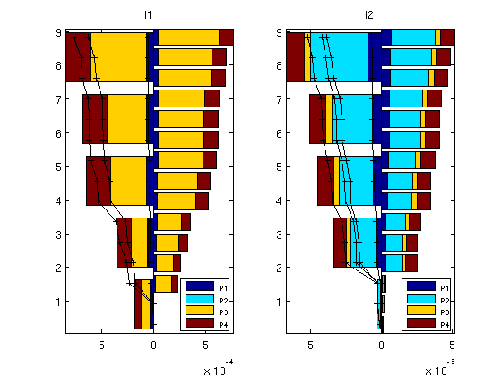

Example 3: Upscaling
In this example we illustrate how allocation factors for well pairs can be used to assess the quality of upscaling. As our example, we consider a subsample of Model 2 from the 10th SPE Comparative Solution Project, but with a different well pattern consisting of two central injectors and producers at each of the four corners.
Contents
Set up fine-scale problem
mrstModule add spe10 coarsegrid fprintf(1,'Setting up fine-scale problem ...'); cartDims = [ 60, 220, 15]; physDims = [1200, 2200, 2*cartDims(end)] .* ft(); % ft -> m if ~readCache({cartDims}, 'verbose', false), rock = SPE10_rock(1:cartDims(end)); rock.perm = convertFrom(rock.perm, milli*darcy); rock.poro = max(rock.poro, 1e-4); G = cartGrid(cartDims, physDims); G = computeGeometry(G); writeCache({cartDims}, {'G', 'rock'}); end wtype = {'bhp', 'bhp', 'bhp', 'bhp', 'bhp', 'bhp'}; wtarget = [200, 200, 200, 200, 500, 500 ] .* barsa(); wrad = [0.125, 0.125, 0.125, 0.125, 0.125, 0.125] .* meter; wloc = [ 1, 60, 1, 60, 20, 40; 1, 1, 220, 220, 130, 90]; wname = {'P1', 'P2', 'P3', 'P4', 'I1', 'I2'}; W = []; for w = 1 : numel(wtype), W = verticalWell(W, G, rock, wloc(1,w), wloc(2,w), 1 : cartDims(end), ... 'Type', wtype{w}, 'Val', wtarget(w), ... 'Radius', wrad(w), 'Name', wname{w}); end fluid = initSingleFluid('mu', 1*centi*poise, 'rho', 1014*kilogram/meter^3); fprintf(1,'done\n');
Setting up fine-scale problem ...done
Solve flow problem and compute flow diagnostics
fprintf(1,'Solving fine-scale problem ...'); mrstModule('add', fullfile(ROOTDIR, 'mex', 'AGMG')) rS = initState(G, W, 0); T = computeTrans(G, rock); rS = incompTPFA(rS, G, T, fluid, 'wells', W); D = computeTOFandTracer(rS, G, rock, 'wells', W); WP = computeWellPairs(rS, G, rock, W, D); fprintf(1,'done\n');
Solving fine-scale problem .../home/moyner/simmatlab/branches/mrst-releases/2012b/mex/AGMG: No such module or directory! done
Upscale petrophysical data
Upscale the permeability using either simple harmonic averaging, which we expect will give quite poor results, or a standard flow-based method from the 'upscaling' module, which is expected to give reasonable results. Notice that the computational cost of the flow-based method may be quite high for large subsets of the SPE10 model. For the porosity, we use a simple average.
flowbased = true; fprintf(1,'Upscaling ...'); cfac = [5 5 3]; p = partitionUI(G, cartDims./cfac); if flowbased mrstModule add upscaling agglom coarsegrid CG = generateCoarseGrid(G, p); crock.perm = upscalePerm(G, CG, rock, 'Verbose',true); else for i=1:3; K = accumarray(p,1./rock.perm(:,i))./accumarray(p,1); crock.perm(:,i) = 1./K; end end crock.poro = accumarray(p, rock.poro)./accumarray(p,1); fprintf(1,'done\n');
Upscaling ...Computing upscaled permeabilities... Elapsed time is 64.974835 seconds. done
Setup the coarse-scale problem
fprintf(1,'Setting up coarse-scale problem ...'); Gc = cartGrid(cartDims./cfac, physDims); Gc = computeGeometry(Gc); cwloc(1,:) = ceil(wloc(1,:)/cfac(1)); cwloc(2,:) = ceil(wloc(2,:)/cfac(2)); Wc = []; for w = 1 : numel(wtype), Wc = verticalWell(Wc, Gc, crock, cwloc(1,w), cwloc(2,w), ... 1 : (cartDims(end)/cfac(end)), ... 'Type', wtype{w}, 'Val', wtarget(w), ... 'Radius', wrad(w), 'Name', wname{w}); end fprintf(1,'done\n');
Setting up coarse-scale problem ...done
Solve coarse-scale flow problem and compute flow diagnostics
fprintf(1,'Solving coarse-scale problem ...'); rSc = initState(Gc, Wc, 0); Tc = computeTrans(Gc, crock); rSc = incompTPFA(rSc, Gc, Tc, fluid, 'wells', Wc); Dc = computeTOFandTracer(rSc, Gc, crock, 'wells', Wc); WPc = computeWellPairs(rSc, Gc, crock, Wc, Dc); fprintf(1,'done\n');
Solving coarse-scale problem ...done
Compare allocation factors
We contrast the allocation factors for the injection wells computed on the fine and the coarse model. Ideally, bars on the negative axis that represent the allocation factors for the coarse model should be the mirror of the bars on the positive axis that represent the allocation factors for the fine model. To simplify the comparison, the fine-scale allocation factors are indicated by lines on top of those of the coarse scale.
figure; for i=1:numel(D.inj) subplot(1,2,i) barh(WP.inj(i).z, cumsum(WP.inj(i).alloc,1),'stacked'); lh=legend(W(D.prod).name,4); hold on barh(WPc.inj(i).z, -cumsum(WPc.inj(i).alloc,1), 'stacked'); plot(-cumsum(cumsum(WP.inj(i).alloc,1),2), WP.inj(i).z, '+-k'); hold off, axis tight set(lh,'units','pixels'); lp = get(lh,'OuterPosition'); set(lh, 'FontSize',6, 'OuterPosition',[lp(1:2)+[lp(3)-60 0] 60 60]); title(W(D.inj(i)).name); end